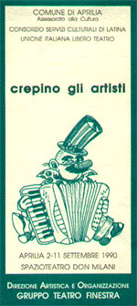
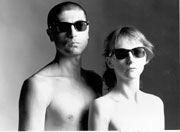

|  |
APRILIA 2-11 SETTEMBRE 1990
SPAZIOTEATRO ALL’APERTO
CENTRO DON MILANI VIA MILANO
PROGRAMMA
2-11 SETTEMBRE
SCUOLA m. “m. Garibaldi”
CORSO RESIDENZIALE NAZIONALE per operatori del teatro non professionale
“IL LAVORO DI ATTORE” (tecniche ed esperienza del teatro dell’est) studio ed interpretazione.
Condotto da Leszek Czarnota, diretto da Silvio Manini (Teatro Stabile di Monza).
3 SETTEMBRE ore 20
MOSTRA FOTOGRAFICA “Il teatro in Polonia” con il patrocinio dell’Ambasciata della Repubblica di Polonia
3 SETTEMBRE ore 21,30
Coltelleria Eistein
“MARE MOSSO” di Giorgio Bocassi. Con Donata Boggio Sola e Giorgio Boccassi.
|  |
| Coltelleria Eistein |
5 SETTEMBRE ore 21,30
Magda Czarnota
CONCERTO PER PIANOFORTE
7 SETTEMBRE ore 21,30
Video
FRAMMENTI DI SPETTACOLI E DOCUMENTI SULLA MESSA IN SCENA
9 SETTEMBRE ore 21,30
Vasco Mirandola
MAX. “Storia di un uomo comune diverso dagli altri”
11 SETTEMBRE ore 21,30
DIMOSTRAZIONE SPETTACOLO degli allievi del corso di teatro